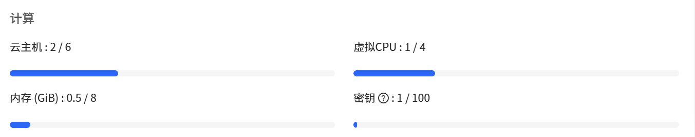
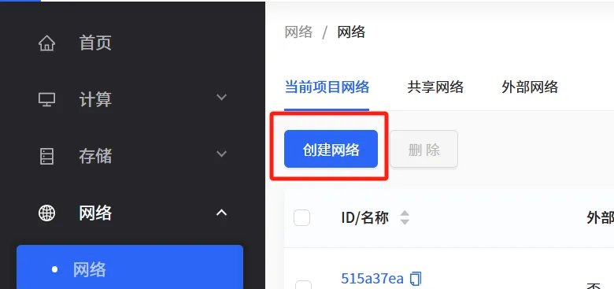
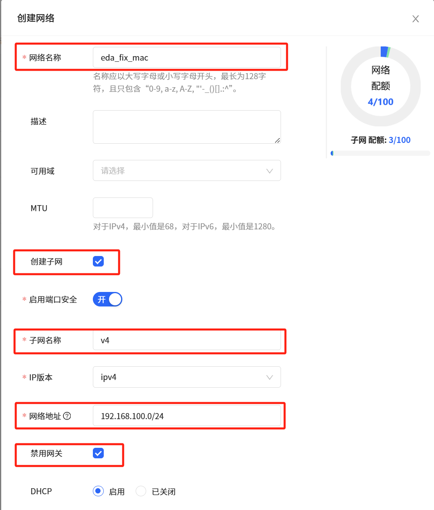

CLab 计算服务使用方法
推荐使用Chrome浏览器（Edge与Firefox浏览器可能有兼容性问题）
创建主机
要使用CLab，首先需要创建云主机，步骤如下：
确定资源与权限是否分配成功
- 使用学号登陆CLab，在首页，检查以下配额：
- 虚拟CPU≥4；
- 内存 ≥ 8 GiB；
- SSD容量 ≥ 150 GiB.
 
{kind=link}
- 左侧边栏选择
网络→网络→共享网络，查看是否有hwforai_2025spring这一网络：
创建固定MAC的网络
- 左侧边栏选择
网络→网络→当前项目网络，选择 “创建网络”；
{kind=link}
- 完善网络信息：
- 填写网络名称，名称随意，比如
eda
- 勾选”创建子网“，填写子网名称，比如
v4，版本保持IPv4不变
- 填写子网网段，可以使用
192.168.100.0/24
- 展开高级设置，勾选”禁用网关“，点击确定，创建网络

- 填写网络名称，名称随意，比如
{kind=link}
- 在左边栏选中
网络-端口，点击”创建虚拟网卡“- 填写网卡名称，名称随意，比如
eda；
- 选择网络，选择刚刚创建的EDA网络（
eda_fix_mac）；
- 选择所属子网，选择刚刚创建的EDA子网（
v4）；
- 在
Mac地址处选择”手动输入“。填写00:0c:29:4d:b2:85；
- 选择安全组，使用
default即可；
- 点击确定，创建虚拟网卡；

- 填写网卡名称，名称随意，比如
创建课程用云主机
- 在左边栏选中
计算-云主机，进入云主机列表，点击创建云主机

第一页：资源配置
- 选择规格：使用
elite_computing分类，类型为e3
- 选择操作系统：使用
其他分类，选择CLab EDA
- 选择硬盘：点击“是-创建云硬盘”，使用
SSD类型，大小为150GB
第二页：网络配置
- 选择网络（顺序不能颠倒，否则会无法访问网络！）：
- 首先勾选”共享网络“中的
pku-new；
- 然后勾选”共享网络“中
hwforai_2025spring；
- 首先勾选”共享网络“中的
- 暂时不要选择
eda网络，进入下一步；

第三页：其他配置
- 填写名称，比如
smart_hw_eda
- 选择密钥。选择“创建密钥”，创建新密钥，密钥名称随意，保管好下载的私钥文件，该私钥可以用于登陆ssh；

点击两次确定，创建机器。等待主机状态从“创建中“变为“运行中“。这一步可能需要等待几分钟，请坐和放宽，稍后可以刷新页面查看状态。
创建后
创建完成后，在左边栏选中 网络-端口，找到刚刚创建的端口（此处是 eda），特定Mac地址的虚拟网卡，点击”更多-绑定云主机”，选中刚刚创建的主机，点击确定；

登陆主机，进行配置
使用SSH登陆主机
该步骤你可能需要一个终端；
- 在云主机页面，获取机器的IP地址，使用前缀为
10.129.xxx.xxxIP（需要在校园网环境下操作）；
- 用户名为
almalinux，使用之前获得的ssh key登陆：
ssh almalinux@10.129.xxx.xxx启动EDA证书管理服务
sudo chmod 644 /opt/eda/Synopsys/scl/2021.03/admin/license/Synopsys.dat
sudo systemctl enable --now lmg挂载远程文件夹
后续作业相关文件会存放在远程共享文件夹，文件夹是只读，需要将文件复制到本地目录下以进行操作；
创建挂载点：
sudo mkdir /mnt/course_files挂载（重启服务器后，需要重新执行此命令）：
sudo mount 192.168.102.10:/mnt/nfs/ /mnt/course_files为验证是否完成挂载，可以查看 /mnt/course_files 下是否有README文件。
连接远程桌面
使用lcpu rd命令，输入您的学号，即可使用远程桌面。您可以通过家目录中rd_password文件，或者再次输入lcpu rd命令，查看远程桌面的密码。
访问https://rd.lcpu.dev，使用账号密码登录，即可使用远程桌面。
{kind=link}
连接北大网关（可选）
如您需要使用互联网，或者使用vscode连接远程主机，您需要连接北大网关。您可以使用
lcpu connect命令，输入您的学号或者工号，即可连接北大网关。连接成功后，您可以使用
lcpu disconnect命令断开连接。